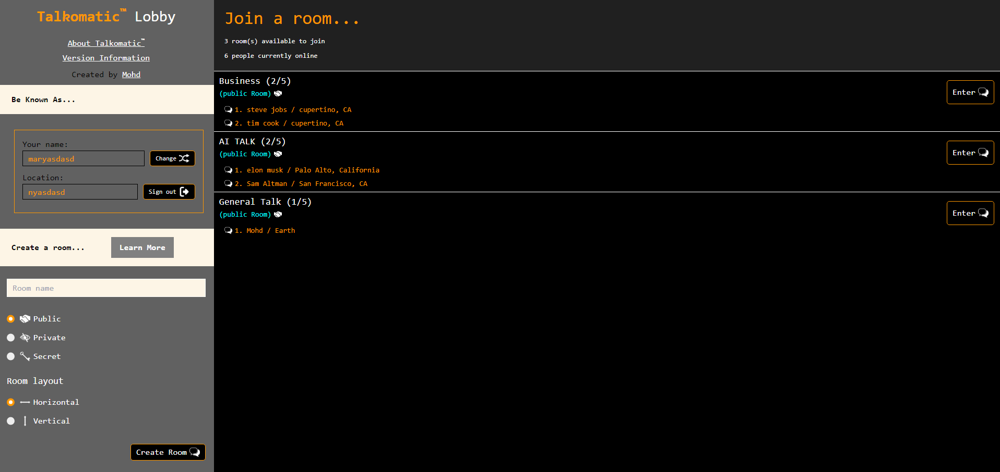
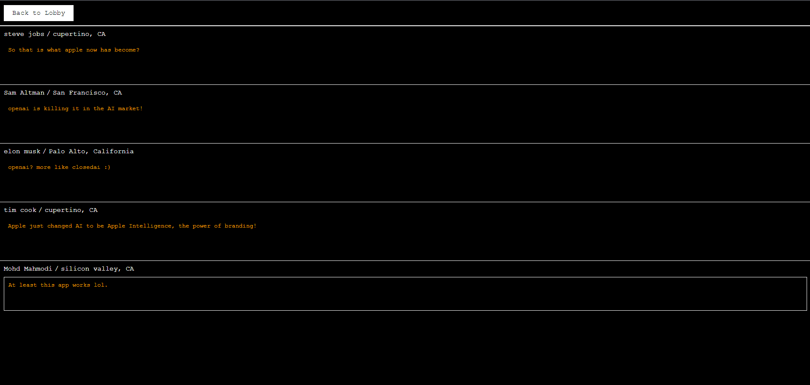
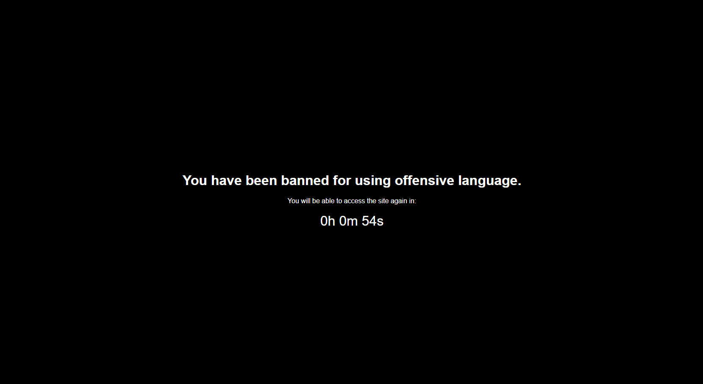

Mohd's version of Talkomatic builds on the 2014 web version, integrating modern technologies and an automated moderation system to prevent harassment, hate speech, bullying, and other inappropriate behaviors.
The left column allows users to set their name and location. This information can be saved with cookies enabled, allowing the data to persist even after closing the browser. There is no database; everything is managed via a custom API and Node.js, ensuring privacy and security as nothing is saved or visible to others not in the chatroom.
The right column displays the number of users currently connected and the number of rooms created. Below this, the original layout shows the room name and the number of people out of 5 who are in the room. Underneath is the room privacy status, followed by the list of users.
If a room has 0 users in it for 5 seconds it gets automatically removed.
Each chat room can hold a maximum of 5 people. At the top is a back button to return to the lobby to change the name or join another room. As users join, their information appears in one of the 5 rows, each displaying the username and location at the top, followed by a text area for real-time conversation.
An automated moderation system is in place to detect keywords as they are being typed. If inappropriate content is detected, the user is removed from the room and subjected to a ban lasting between 30 minutes and 24 hours. Currently, the default ban duration is 30 minutes.
The system moderates basic offensive words and phrases that are degrading or inappropriate. Some offensive language is intentionally not moderated to balance user experience and moderation effectiveness.
We will be testing this system and gathering feedback to adjust the moderation level based on the community's needs. This will help us determine if the moderation is too strict or too lenient and make necessary adjustments.
When banned, users attempting to access the web app are redirected to a ban page showing a countdown timer until the ban is lifted. Once the timer reaches zero, the user is automatically redirected back to the home page and can use the app normally. Repeat offenders may face permanent bans.
While the moderation system is not perfect, it has been highly effective during beta testing, successfully removing 95% of offenders before any inappropriate content is visible to others in the chat. It works like magic.
